本篇教程将基于一个易语言基于MySQL的“网站密码管理工具”，用火山视窗将其进行重写，以学习如何从易语言转移到火山视窗。
易语言例程：点击下载。
首先打开易语言例程，进行简单的分析：
当前例程有三个窗口和三个窗口程序集：
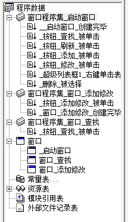
移植注意事项如下：
在易语言主窗口中存在菜单，在火山操作菜单时需要单独定义一个菜单类来解决，并且在火山中不支持实时在设计器中预览菜单效果。
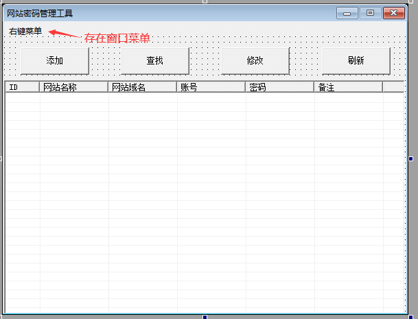
MySQL数据库搭建方式有很多，可以去MySQL官网下载或者直接使用第三方集成环境工具创建，譬如小皮面板或宝塔面板等。
这里采用小皮面板来搭建MySQL数据库：
(1) 下载并安装小皮面板后，点击“软件管理”找到MySQL进行安装，建议安装高版本。
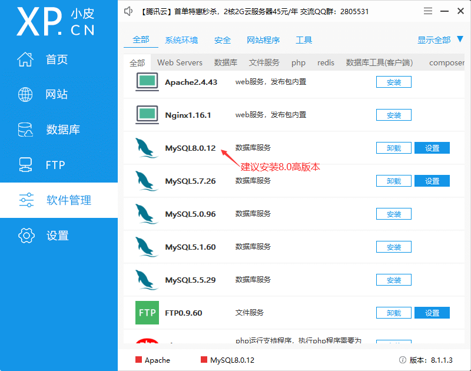
(2) 点击“首页”选择启动mysql数据库。
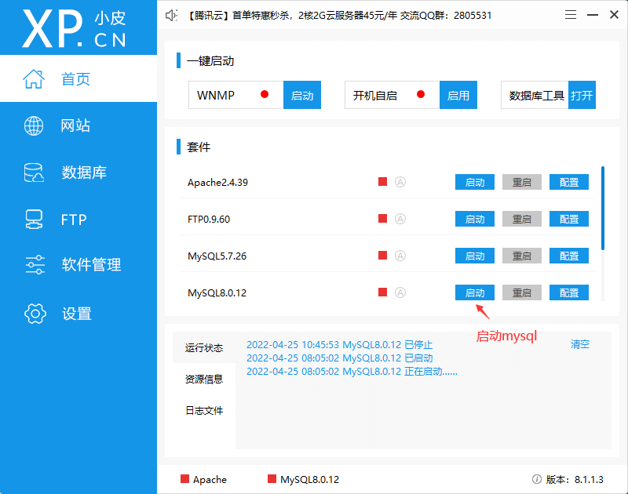
(3) 数据库启动成功后，点击“数据库”选择“创建数据库”
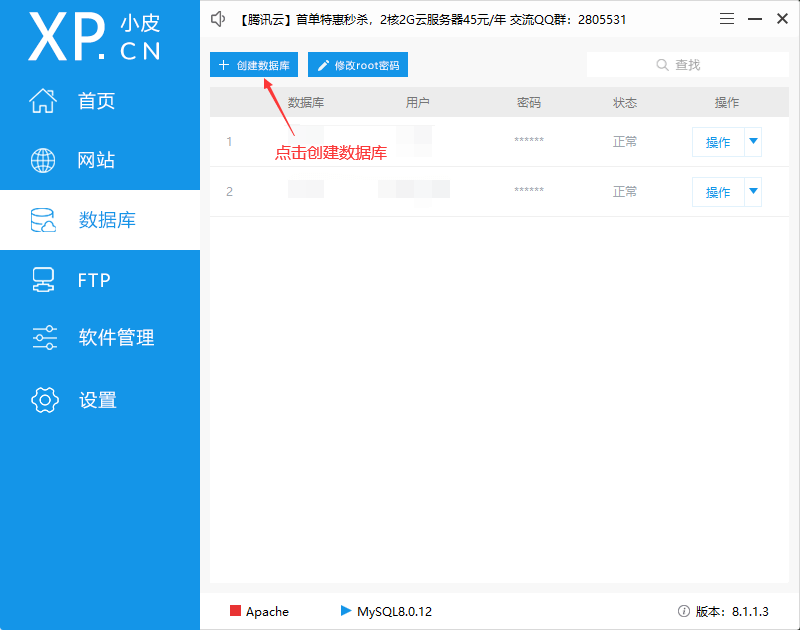
(4) 输入数据库名称账号和密码，点击“确认”。
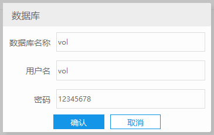
(5) 点击“软件管理->工具->数据库工具”选择“HeidiSQL”进行数据库管理，如果未安装会显示“安装”，安装后点击管理。
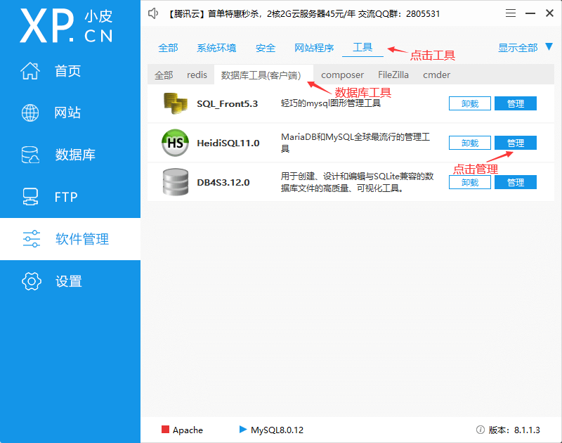
(6) 进入数据库管理软件后点击“新建”。
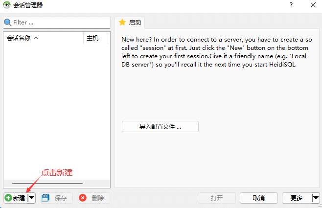
(7) 输入账号密码后点击“打开”。
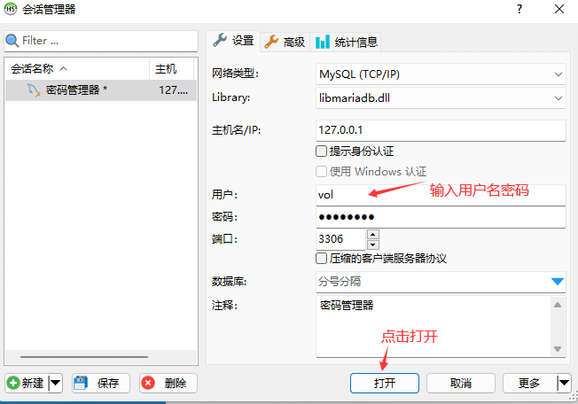
(8) 右键数据库选择“创建新的->表”菜单，进行数据表创建。
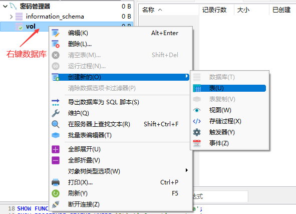
(9) 输入表名后，进行字段添加，首个字段务必为“INT”整数型，用于存储唯一ID值。
注：默认一栏无法点击时可双击打开，“AUTO_INCREMENT”表示自增ID，务必勾选后点击“确定”。
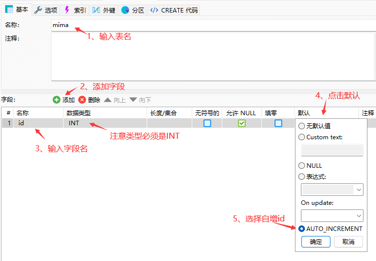
(10) 重复添加字段，以便于满足所有存储需求。
注：其余类型为“VARCHAR”表示存储文本。
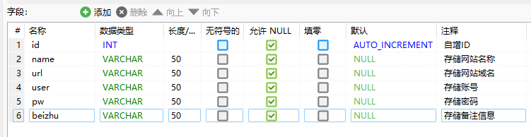
(11) 右键“id”进行主键设置。
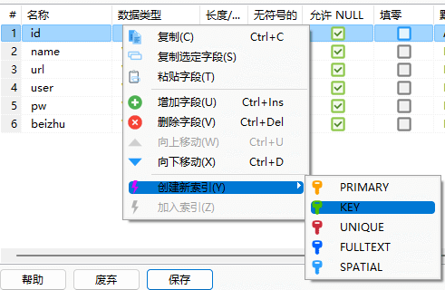
(12) 主键设置后会出现一个小图标，最后点击“保存”即可完成数据库表创建。
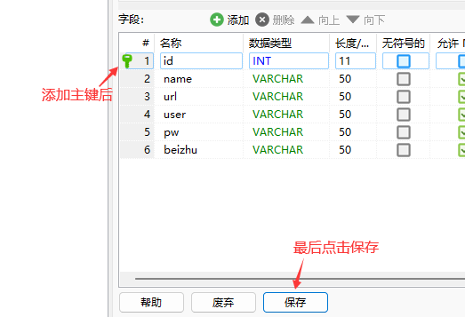
点击“文件->新建->项目”菜单，创建一个MFC窗口程序。
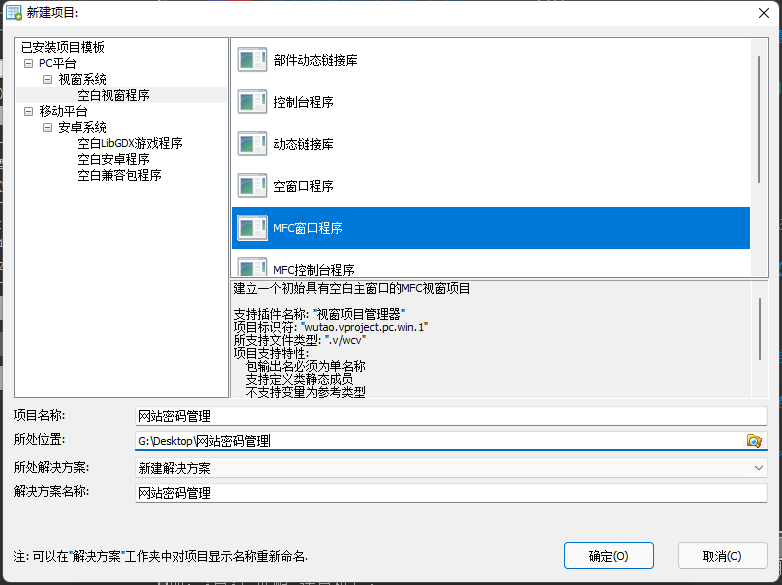
创建后注意“标题”属性问题，其默认位于窗口变量中。
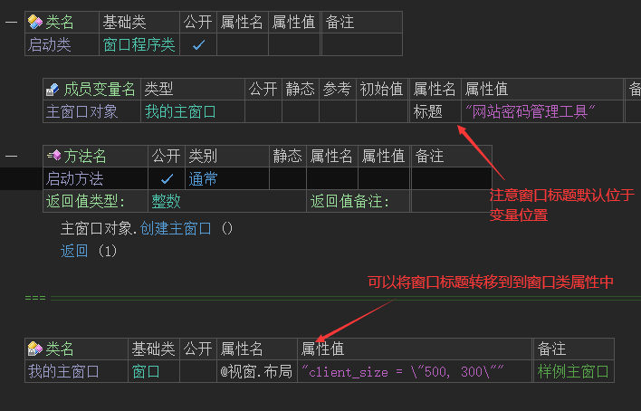
5.1 易语言界面分析
当前窗口中有以下几种组件：
(1) 菜单
(2) 按钮
(3) 超级列表框
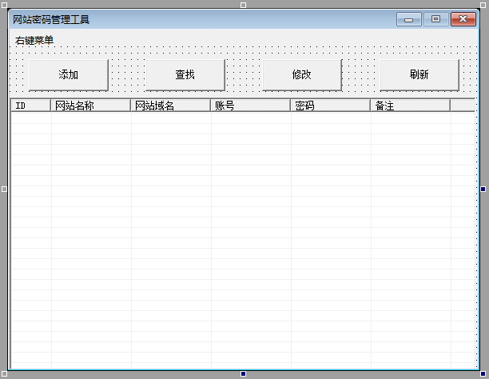
5.2 火山视窗界面设计
5.2.1 界面设计5.2.2 超级列表框报表列设置打开视窗界面设计器，将易语言中所使用的组件在火山视窗中复现出来。
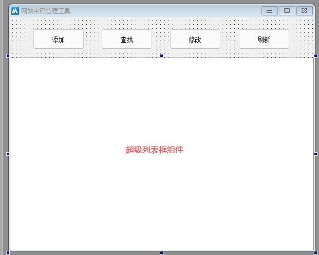
5.2.3 菜单设计在易语言中需要右键组件选择“设置报表列”。
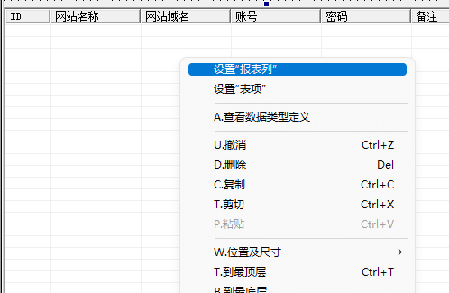
报表列设置界面如下：
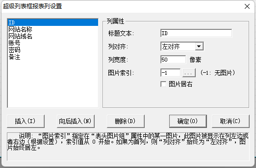
在火山中通过“报表列”属性进行设置。
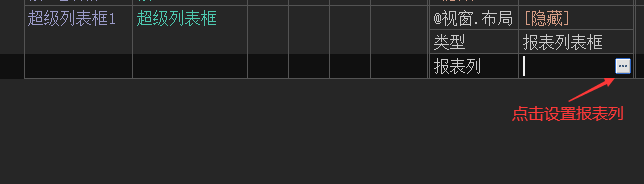
其界面如下，与易语言使用方式基本一致，设置完成后点击“确定”即可。
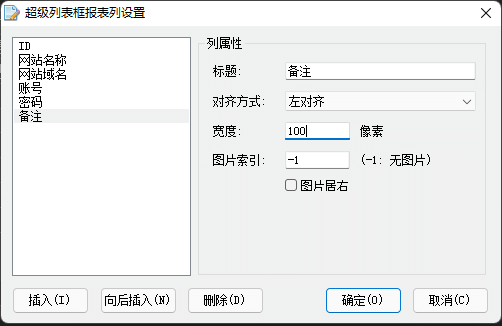
在易语言中需要在界面设计器中右键选择“菜单编辑框”进行菜单设计。
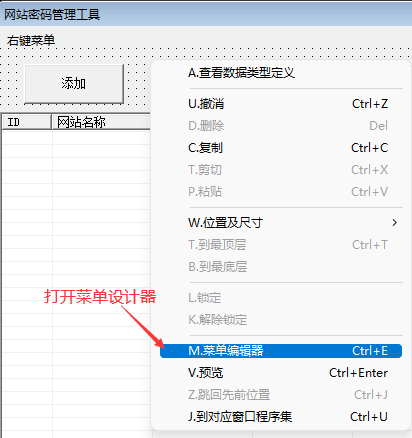
易语言菜单设计效果如下：
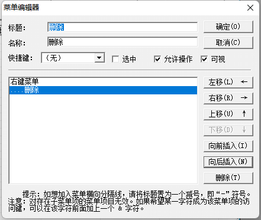
在火山视窗中需要新建一个基础类为“菜单类”的类，右键选择“打开菜单设计器”即可进行菜单设计。
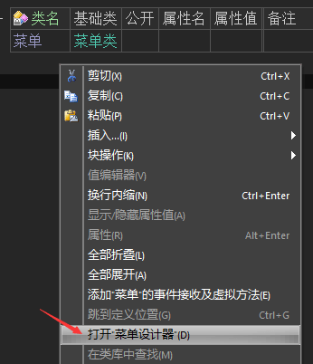
火山视窗菜单设计器如下，其实用方式和易语言基本一致：
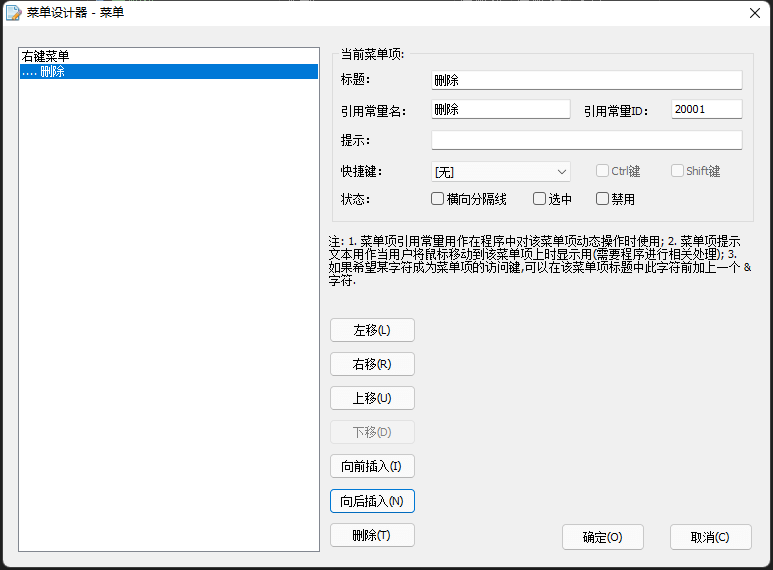
在易语言中设计完毕会自动在界面设计器预览，在火山中会生成菜单常量。
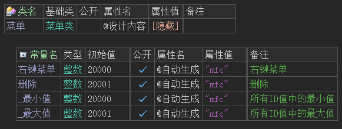
添加超级列表框“右键单击表项”事件。
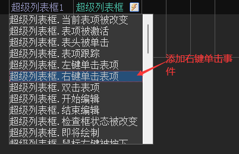
在事件下调用“弹出菜单()”方法进行菜单弹出操作。
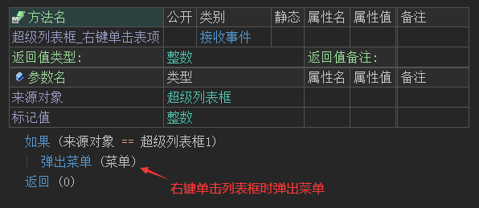
火山视窗右键菜单演示效果如下：
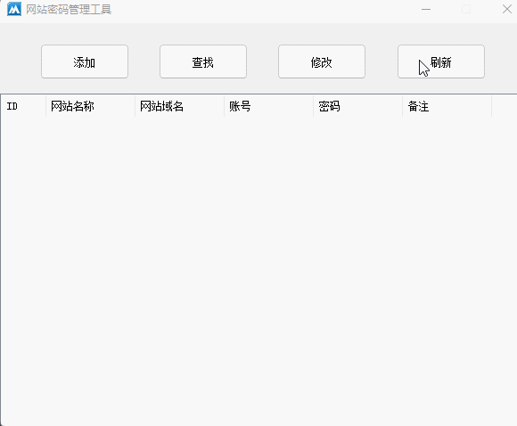
6.1 易语言界面分析
当前窗口中有以下几种组件：
(1) 标签
(2) 组合框
(3) 编辑框
(4) 按钮
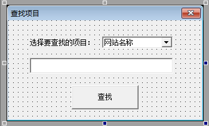
6.2 火山视窗界面设计
6.2.1 界面设计6.2.2 组合框列表项目设置(1) 新建窗口类，同时设置相关属性。
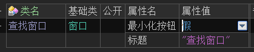
(2) 在火山视窗中将界面复现出来。
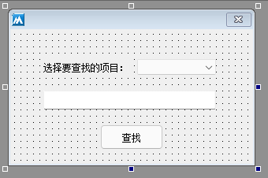
在易语言中需要右键组件选择“设置列表项目”菜单进行设置。
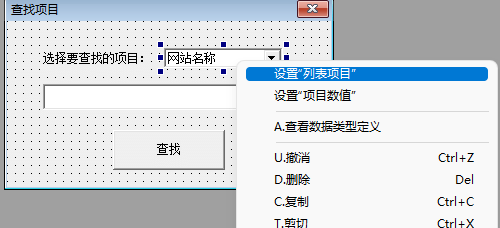
其界面效果如下：
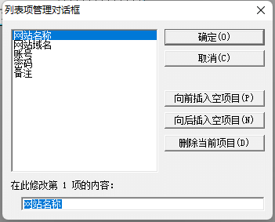
在火山中需要使用“列表项目”属性进行设置。
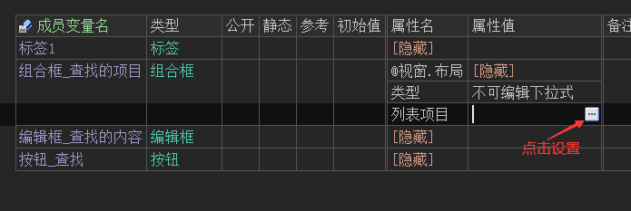
其界面如下，与易语言使用方式基本一致，设置完成后点击“确定”即可。
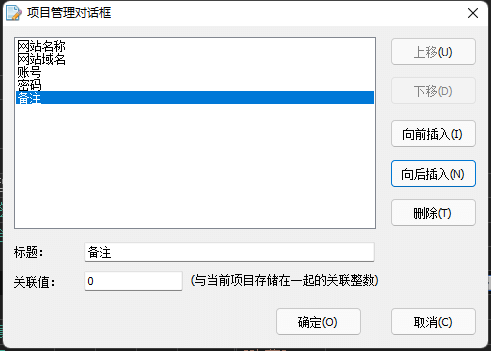
列表项目设置完毕后，同时设置一下“现行选中项”属性为0。
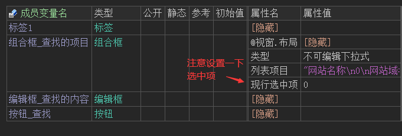
最终效果如下：
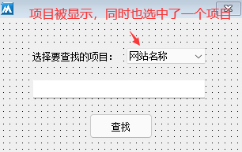
7.1 易语言界面分析
当前窗口中有以下几种组件：
(1) 标签
(2) 编辑框
(3) 按钮
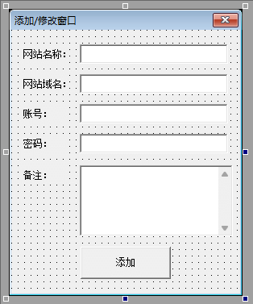
7.2 火山视窗界面设计
新建一个窗口类，同时设置相关属性。
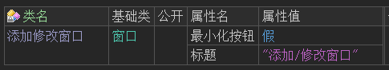
打开视窗界面设计器，将易语言中所使用的组件在火山视窗中复现出来。
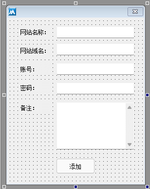
8.1 “__启动窗口_创建完毕”代码移植：
易语言代码如下：
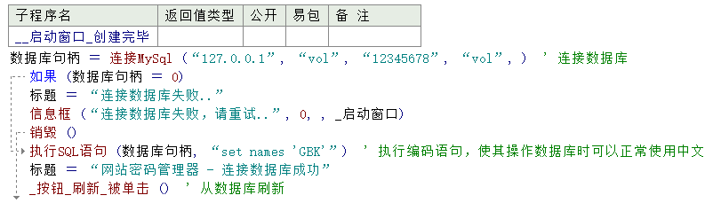
移植到火山后，注意事项如下：
(1) 火山中的数据库操作需要定义“Mysql数据类”的变量，调用“连接”方法连接数据库。
(2) 可调用“置当前字符集()”方法代替易语言中的执行sql语句方法，进行编码设置。
(3) “销毁()”方法使用“关闭窗口()”方法代替。
(4) 新建一个“刷新”方法用于刷新数据库，代替“_按钮_刷新_被单击 ()”事件。
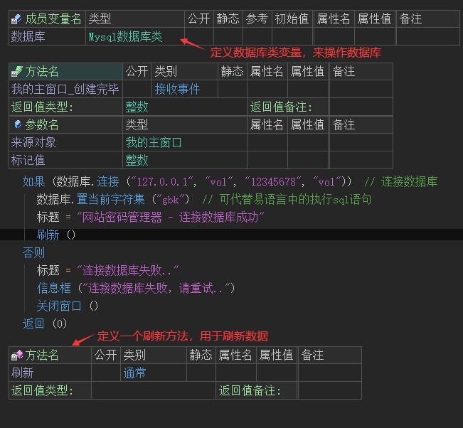
8.2 “_按钮_刷新_被单击”代码移植：
易语言代码如下：
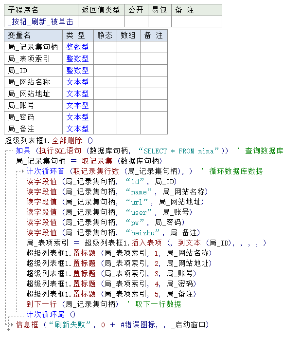
移植到火山后，注意事项如下：
(1) 将易语言中按钮点击执行的刷新代码放到火山视窗的刷新方法中。
(2) 火山视窗中无记录集句柄，需要通过“取记录集()”方法取出“Mysql记录集类”。
(3) 火山中可利用“判断循环”语句，循环的判断“到下一行”不断取出下一行数据，直到全部取出完毕后自动跳出循环。
(4) 在火山中可利用“取当前行文本数据()”方法代替易语言中的“读字段值()”。
注：取出的数据库数据都存储在文本数组类中，数组中的第一个成员为数据库中的第一个字段值，以此类推。
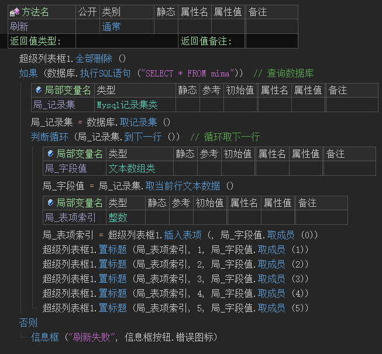
8.3 按钮点击移植
易语言代码如下：
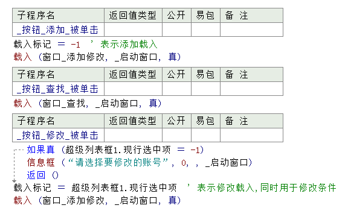
移植到火山后，注意事项如下：
(1) 在火山视窗中同类型的事件都是统一管理，需要通过“来源对象”参数判断事件来源。
(2) “载入标记”成员变量注意勾选公开。
(3) 刷新按钮点击时，直接调用“刷新()”方法即可。
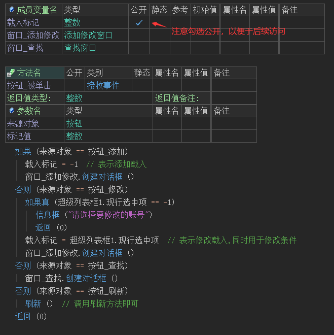
8.4 “删除”菜单事件移植
易语言代码如下：
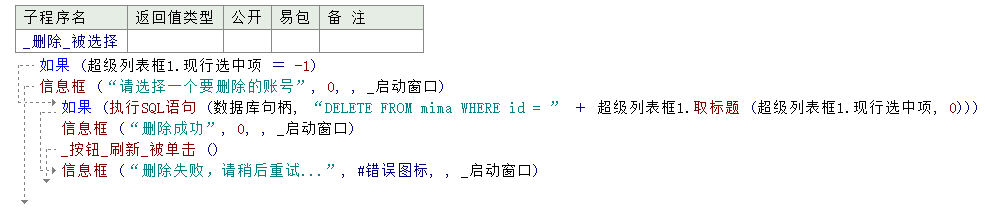
移植到火山后，注意事项如下：
在火山视窗中菜单事件需要使用窗口的“接收到命令”事件，通过“命令代码”参数来判断是哪个菜单单击。
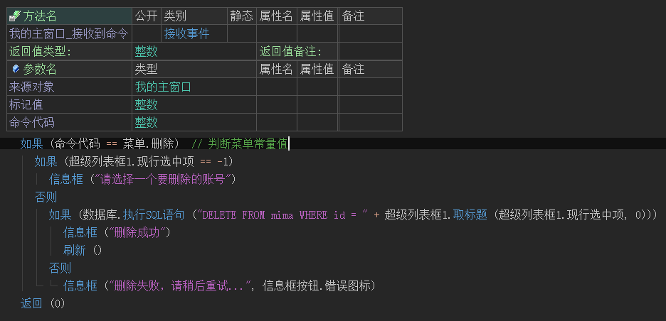
本程序集下只有一个按钮点击事件，如下所示：
移植到火山时，流程如下：
(1) 首先公开启动类中的主窗口变量。
(2) 公开主窗口中的超级列表框变量。
(3) 公开刷新方法。
(4) 移植后的注意事项如下：
1. 在火山中访问主窗口的超级列表框，需要利用“取程序()”方法一级一级访问，为方便后续操作可以提前将超级列表框组件取出，后续直接使用列表框变量即可操作。
2. 调用主窗口中的刷新方法，也需要利用“取程序()”方法一级一级访问。
3. 易语言中的“销毁()”方法使用“关闭窗口()”代替。
10.1 “_窗口_添加修改_创建完毕”代码移植
易语言代码如下：
移植到火山时注意事项如下：
提前利用“取程序()”方法将超级列表框组件和载入标记取出，后续使用时就不需要逐级访问。
10.2 “_按钮_添加修改_被单击”代码移植
易语言代码如下：
移植到火山时注意事项如下：
(1) 首先将主窗口中的“数据库”变量公开。
(2) 在火山中访问数据库时需要利用“取程序()”方法逐级访问。
(3) 易语言中的“销毁()”方法使用“关闭窗口()”代替。
添加演示：
修改演示：
查找演示：
删除演示：